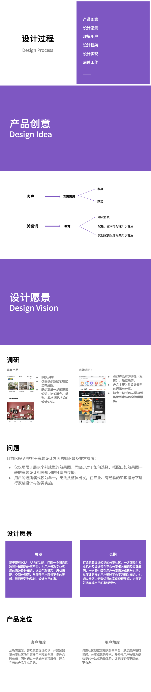
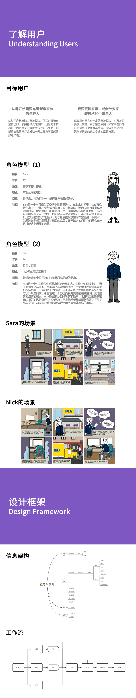
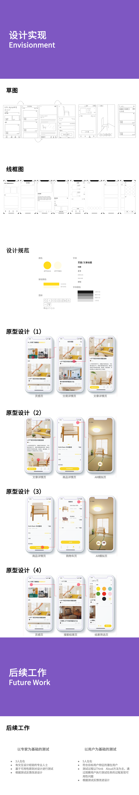

UX设计练习
UX/UI Design Prototyping UCD Design Process Adobe XD
这是一次为期一周的UX设计练习，题目是以给定关键字宜家与教育组合产生一个产品创意，并给出设计过程及结果。由于时间仓促，本次练习缺少了用户调研及用户测试部分的数据支撑，使得练习成果打了折扣。不过，通过这次练习，我回顾了以用户为中心的设计过程，并实践了一些核心步骤，这依然是一次很好的学习机会。练习用到的工具主要是Adobe XD及PS，最终的交互原型链接为： Prototype 。下面是对此次设计过程的一些总结及展示：


